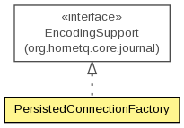

org.hornetq.jms.persistence.config
Class PersistedConnectionFactory
java.lang.Object
 org.hornetq.jms.persistence.config.PersistedConnectionFactory
org.hornetq.jms.persistence.config.PersistedConnectionFactory
- All Implemented Interfaces:
- org.hornetq.core.journal.EncodingSupport
public class PersistedConnectionFactory
- extends Object
- implements org.hornetq.core.journal.EncodingSupport

A PersistedConnectionFactory
- Author:
- Clebert Suconic
| Methods inherited from class java.lang.Object |
clone, equals, finalize, getClass, hashCode, notify, notifyAll, toString, wait, wait, wait |
PersistedConnectionFactory
public PersistedConnectionFactory()
PersistedConnectionFactory
public PersistedConnectionFactory(ConnectionFactoryConfiguration config)
- Parameters:
config -
getId
public long getId()
- Returns:
- the id
setId
public void setId(long id)
getName
public String getName()
getConfig
public ConnectionFactoryConfiguration getConfig()
- Returns:
- the config
decode
public void decode(HornetQBuffer buffer)
- Specified by:
decode in interface org.hornetq.core.journal.EncodingSupport
encode
public void encode(HornetQBuffer buffer)
- Specified by:
encode in interface org.hornetq.core.journal.EncodingSupport
getEncodeSize
public int getEncodeSize()
- Specified by:
getEncodeSize in interface org.hornetq.core.journal.EncodingSupport
Copyright © 2013 JBoss, a division of Red Hat. All Rights Reserved.